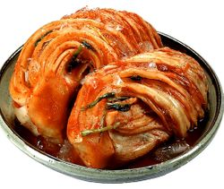

소금물에 절이고 발효시켜 보관성을 높인 채소를 갖은 양념으로 맛을 내어 먹는 음식.
맵고 짠 김치 외에도 다양한 종류의 김치가 존재하며, 통상 배추를 절인 것으로 오해되지만,
무를 절여서 만든 총각김치나 깍두기, 오이로 만든 오이소박이 등의 김치도 존재한다.
심지어 브로콜리 등으로도 김치를 만든다.
한번 절인 채소를 다시 양념한다는 점이 특징이다.
사용되는 재료에 있어서도 일부 몇몇 채소를 제외하고는 대부분이 가능하다.
아울러 저온 상태에서 밀봉 보관이 가능하다면 몇 년간 두고 먹을 수 있는 장기 보관 음식이기도 하다.
또한, 김치의 종류는 매우 다양하여 가장 많이 알려진 배추김치부터 시작해서 다양한 변형이 존재한다.
지역마다 다른 지역에서는 볼 수 없는 요리법과 재료를 사용한 김치가 존재해 향토음식으로서의 정체성 또한 갖고 있다.
한국음식 특유의 '매콤함과 감칠맛'을 느낄 수 있는 내외국인 공인 가장 한국적인 한국 요리라 할 수 있다.
오늘날 상용되는 '김치'라는 단어의 어원은 한자어 '침채(沈菜)'로, 직역하면 '담근 채소'라는 뜻이다.
채소를 소금물에 담가서 절이고 장기 보관한 음식이기 때문이다.
동치미 역시 겨울에 담가 먹은 침채를 가리키는 말인 동침(冬沈)+-이 가 변형된 말이다.
중세국어 시기에는 '沈菜'를 '딤ㅊ+ㅣ'로 발음했는데, 한국어 대부분의 방언이 겪은 "ㅣ" 앞에 오는 ㄷ이 ㅈ으로 바뀌는 구개음화 현상으로 인해 17세기부터 '짐ㅊ+ㅣ'로 바뀐다.
다만 경상도의 동남 방언 등 일부 지역 방언은 '기름 > 지름', '곁 > 젙', '김 > 짐' 등 ''과 같이 "ㅣ" 앞에 오는 ㄱ이 ㅈ으로 바뀌는 구개음화 현상이 나타났는데,
조선 후기 서울 사람들이 이런 발음을 꺼려하는 분위기 속에 '짐ㅊ+ㅣ'도 '김ㅊ+ㅣ'의 틀린 발음으로 착각해 발음이 '김ㅊ+ㅣ'로 바뀌었다.
과도교정의 대표적인 사례다.
이후 19세기에 '김ㅊ+ㅣ'가 '김채'를 거쳐 오늘날의 '김치'로 정착된다.
몇몇 방언에서는 여전히 '짐치', '지'라 한다.
순우리말 단어는 '디히'였는데, 마찬가지로 구개음화가 적용되어 오늘날 '지'로 바뀌었다.
말 그대로 묵은 김치라는 뜻인 '묵은지', 짠 김치라는 뜻인 '짠지' 등 일부 화석화된 단어를 제외하면 거의 쓰이지 않는다.